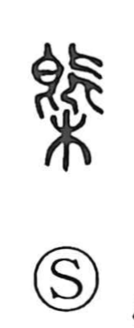

概

Kun: oomune | On: gai
outline ・ summary ・ general ・ approximately
Explanation
A phono-semantic character built with 既 as its phonetic core, which supplies the on-reading gai and links it to companions like 溉 (“to pour”) and 慨 (“to lament”) that share the same sound element. Classical sources describe 概 as a tokaki, a strickle used to level off grain heaped in a measuring container. From the act of scraping the surface to a uniform height comes the sense of making things even and thus presenting only the main contour—hence meanings such as outline, summary, and by extension the idea of what is general or approximate.